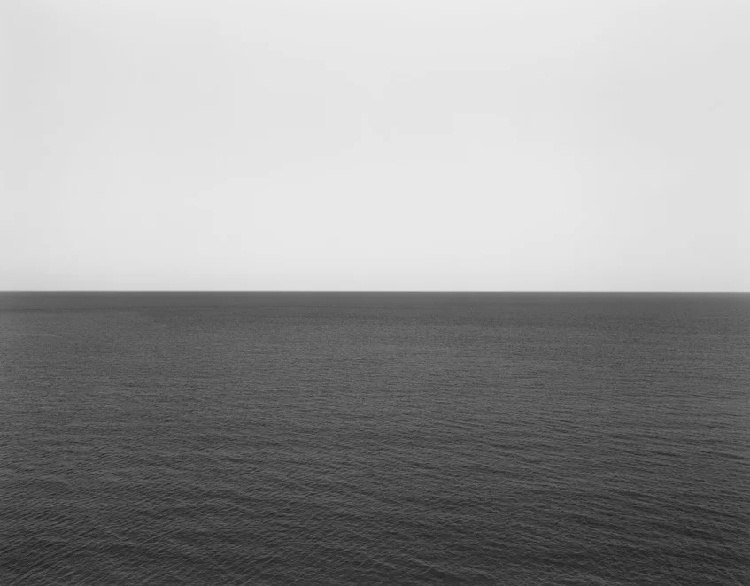

함께 살아가는 곳입니다
Lighthouse
A place where we journey together — Realty Peoples' commitment to the people and neighborhoods that make Southern California home.
Real Estate With a Higher Purpose
Lighthouse is the nonprofit arm of Realty Peoples. We believe that a home is more than a place to live — it is the foundation of a stable, hopeful life. Through Lighthouse, a portion of what we do goes back into the communities we serve, supporting families, first-time homeowners, and local organizations working to keep our neighborhoods strong.
Our name reflects our mission: to be a steady light for those navigating difficult waters — guiding people home, and walking alongside our community for the long journey ahead.
Donations & Partnerships
Where We Give
A share of every closing supports local housing assistance, youth programs, and family-stability initiatives across Orange County and LA County. We publish where contributions go so our clients can see the difference they help create.
Our Partners
We partner with community nonprofits, faith organizations, and small businesses who share our belief in neighbors helping neighbors. Interested in partnering with Lighthouse? We'd love to hear from you.
Join the Mission
Lightkeepers are the people and partners who help us keep the light on — through giving, volunteering, and sharing the work. Become one today.